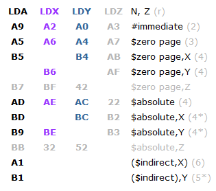
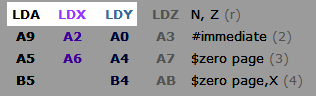
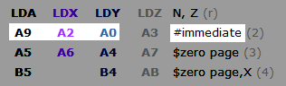
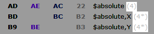
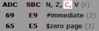
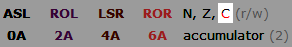
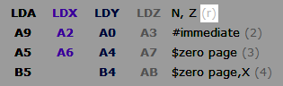
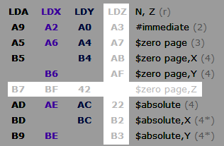

Содержание
Выбери интересующую команду из списка, чтобы посмотреть по ней подробную техническую информацию с примерами.
| ADC | AND | ASL | BCC | BCS | BEQ | BIT | BMI | BNE | BPL | BRK | BVC | BVS | CLC |
| CLD | CLI | CLV | CMP | CPX | CPY | DEC | DEX | DEY | EOR | INC | INX | INY | JMP |
| JSR | LDA | LDX | LDY | LSR | NOP | ORA | PHA | PHP | PLA | PLP | ROL | ROR | RTI |
| RTS | SBC | SEC | SED | SEI | STA | STX | STY | TAX | TAY | TSX | TXA | TXS | TYA |
Раздел еще в разработке, ссылки будут добавлены постепенно.
Существуют неофициальные команды, которые вряд ли будут здесь описаны. Список можно посмотреть на NesDev. Некоторые из них можно использовать для небольшой оптимизации своего кода.
В Debugger'е их опкоды отображаются как UNDEFINED. Работоспособность этих команд в эмуляторе я пока не проверял. В теории должны работать, раз некоторые игры их используют.
Изображение разработано в основном для тех, кто записывает команды байтами через Hex Editor. Команды разделены по категориям, каждая категория содержит некоторое количество дополнительной информации.
Для разбора некоторой информации на изображении возьмем в пример категорию команд загрузки байта в регистры.

Название точно такое же, как отображается в Debugger'е.

Опкодом определяется режим адресации. Сам режим указан справа от опкодов.

Количество тактов, затрачиваемое процессором на выполнение команды с выбранным режимом адресации. В некоторых случаях количество тактов отмечено звездочками, которые означают, что при определенном условии будет дополнительно затрачен +1 такт (*) или +2 такта (**).

Количество затраченных тактов можно отслеживать в Debugger'е по счетчику CPU cycles.
Условия для затраты дополнительных тактов будут описаны отдельно в справке этих команд.
Флаги, состояние которых будет обновлено при выполнении команды.

Для команд

Поскольку состояние флага C не учитывается при выполнении команд

Тип брейкпоинта Read и/или Write, который сработает в случае попытки процессора выполнить команду с участием адреса, указанного в условии брейкпоинта.

Команды, опкоды и некоторые разновидности режимов адресации, отмеченные серым цветом, существуют только в модифицированном эмуляторе Mednafen. В основном это команды с участием нового регистра Z.
